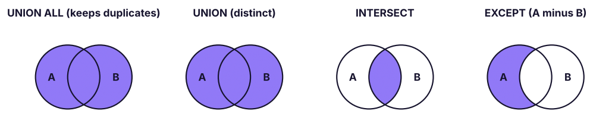

Set Operators: UNION, UNION ALL, INTERSECT & EXCEPT
Stack and compare query results. Append data with UNION ALL, remove duplicates with UNION, find common rows with INTERSECT and differences with EXCEPT, follow the rules for compatible columns, and know when to use a set operator instead of a join.
● SQL class 4✦ SQL Server 2022, 2026Intermediate⏱ 80 min
A join puts tables side by side (more columns). A set operator stacks or compares the rows of two query results with the same columns.

The four set operators. A and B are the result sets of two queries.
Rules for set operators
Both queries must return the same number of columns.
Corresponding columns must have compatible data types (text with text, numbers with numbers).
Column names come from the first query.
Only one ORDER BY, at the very end, applies to the combined result.
UNION, INTERSECT and EXCEPT remove duplicates; UNION ALL does not.
UNION ALL: append
UNION ALL stacks results exactly as they are, like Power Query's Append or pasting one table under another. It is the fastest set operator because it does not check for duplicates.
SQL
SELECT'Furniture'AS source, COUNT(*) AS lines, ROUND(SUM(sales), 0) AS sales FROM superstore WHERE category = 'Furniture'UNIONALLSELECT'Technology', COUNT(*), ROUND(SUM(sales), 0) FROM superstore WHERE category = 'Technology'UNIONALLSELECT'Office Supplies', COUNT(*), ROUND(SUM(sales), 0) FROM superstore WHERE category = 'Office Supplies'ORDERBY sales DESC;
Result
source
lines
sales
Technology
1892
156,438,413
Furniture
1917
34,841,853
Office Supplies
2514
10,133,304
3 rows × 3 columns
A very common real use: combining monthly or regional tables with the same structure.
SQL
SELECT * FROM sales_jan_2026
UNIONALLSELECT * FROM sales_feb_2026
UNIONALLSELECT * FROM sales_mar_2026;
UNION: append and remove duplicates
SQL
SELECTCOUNT(*) AS cities_union_all
FROM (SELECT city FROM customers WHERE segment = 'Corporate'UNIONALLSELECT city FROM customers WHERE segment = 'Home Office') AS t;
Result
cities_union_all
407
1 rows × 1 columns
SQL
SELECTCOUNT(*) AS cities_union
FROM (SELECT city FROM customers WHERE segment = 'Corporate'UNIONSELECT city FROM customers WHERE segment = 'Home Office') AS t;
Result
cities_union
16
1 rows × 1 columns
UNION ALL returned one row per customer; UNION returned each city once.
TipUNION or UNION ALL?
Use UNION ALL unless you need duplicates removed. UNION has to sort or hash the whole result to find duplicates, which is slow on large data, and it can silently remove rows that are genuinely repeated (two identical order lines).
INTERSECT: rows in both
"Which customers ordered in both 2024 and 2025?" (retained customers)
SQL
SELECTCOUNT(*) AS customers_in_both_years
FROM (
SELECT customer_id FROM orders WHEREYEAR(order_date) = 2024INTERSECTSELECT customer_id FROM orders WHEREYEAR(order_date) = 2025
) AS t;
Result
customers_in_both_years
467
1 rows × 1 columns
EXCEPT: rows in the first but not the second
"Which 2024 customers did not come back in 2025?" (churned customers)
SQL
SELECTCOUNT(*) AS customers_lost_after_2024
FROM (
SELECT customer_id FROM orders WHEREYEAR(order_date) = 2024EXCEPTSELECT customer_id FROM orders WHEREYEAR(order_date) = 2025
) AS t;
Result
customers_lost_after_2024
123
1 rows × 1 columns
"Which 2025 customers are new (did not order in 2024 or 2023)?"
SQL
SELECTCOUNT(*) AS new_customers_2025
FROM (
SELECT customer_id FROM orders WHEREYEAR(order_date) = 2025EXCEPTSELECT customer_id FROM orders WHEREYEAR(order_date) < 2025
) AS t;
Result
new_customers_2025
52
1 rows × 1 columns
Order matters for EXCEPT: A EXCEPT B ≠ B EXCEPT A. Oracle calls it MINUS.
Let's put the customer movement together in one table:
SQL
SELECT'Ordered in 2024'AS measure, COUNT(DISTINCT customer_id) AS customers FROM orders WHEREYEAR(order_date) = 2024UNIONALLSELECT'Ordered in 2025', COUNT(DISTINCT customer_id) FROM orders WHEREYEAR(order_date) = 2025UNIONALLSELECT'Retained (2024 and 2025)', COUNT(*) FROM (SELECT customer_id FROM orders WHEREYEAR(order_date) = 2024INTERSECTSELECT customer_id FROM orders WHEREYEAR(order_date) = 2025) AS r
UNIONALLSELECT'Lost (2024 only)', COUNT(*) FROM (SELECT customer_id FROM orders WHEREYEAR(order_date) = 2024EXCEPTSELECT customer_id FROM orders WHEREYEAR(order_date) = 2025) AS l;
Result
measure
customers
Ordered in 2024
590
Ordered in 2025
623
Retained (2024 and 2025)
467
Lost (2024 only)
123
4 rows × 2 columns
Retention rate 2024 → 2025 = retained ÷ customers in 2024. This is the core of customer-retention analysis.
Reconciliation and data-quality checks
Set operators are perfect for comparing two versions of the same data, for example a source system extract and the warehouse table:
SQL
-- Rows in the source extract that are missing or different in the warehouseSELECT order_id, order_date, customer_id, total FROM staging.orders_extract
EXCEPTSELECT order_id, order_date, customer_id, total FROM dw.fact_orders;
-- And the reverse: rows in the warehouse not in the sourceSELECT order_id, order_date, customer_id, total FROM dw.fact_orders
EXCEPTSELECT order_id, order_date, customer_id, total FROM staging.orders_extract;
If both queries return no rows, the two tables match exactly. Because set operators compare whole rows, any difference in any column shows up. (Set operators treat two NULLs as equal, unlike = in a join.)
Set operator or join?
Question
Use
Add columns from another table
JOIN
Stack tables with the same columns
UNION ALL
Distinct list from several sources
UNION
Which keys are in both lists?
INTERSECT, or INNER JOIN / EXISTS
Which keys are in A but not B?
EXCEPT, or LEFT JOIN … IS NULL / NOT EXISTS
Compare entire rows column by column
EXCEPT (handles NULLs as equal)
Summary
Key takeaways
Joins add columns; set operators add or compare rows.
Rules: same number of columns, compatible types, names from the first query, one ORDER BY at the end.
UNION ALL appends everything (fast); UNION removes duplicates.
INTERSECT returns rows in both results; EXCEPT returns rows in the first but not the second (order matters).
Use them for combining periods, retention/churn analysis and reconciling systems.
Quick quiz6 questions · tap an answer to check it
1. Which operator keeps duplicate rows?
Answer: A. UNION ALL does not remove duplicates; the others return distinct rows.
2. Where can ORDER BY appear in a UNION query?
Answer: B. One ORDER BY applies to the combined result.
3.SELECT a, b FROM t1 UNION SELECT c FROM t2 fails because:
Answer: B. Both queries must return the same number of columns.
4. To find customers who ordered in 2024 but not in 2025, use:
Answer: C. EXCEPT returns rows in the first set that are not in the second.
5. Which column names appear in the result of a UNION?
Answer: A. Names (and aliases) come from the first SELECT.
6. Why is UNION ALL usually faster than UNION?
Answer: B. Duplicate removal is extra work that UNION ALL skips.
ExerciseCustomer movement by region
For each region, find the number of customers who ordered in 2024, the number retained in 2025, and the retention rate. Hint: build the retained list with INTERSECT, then join to customers for the region.
Show solution
SQL
WITH c24 AS (SELECTDISTINCT customer_id FROM orders WHEREYEAR(order_date) = 2024),
kept AS (SELECT customer_id FROM c24
INTERSECTSELECT customer_id FROM orders WHEREYEAR(order_date) = 2025)
SELECT c.region,
COUNT(DISTINCT c24.customer_id) AS customers_2024,
COUNT(DISTINCT kept.customer_id) AS retained_2025,
ROUND(100.0 * COUNT(DISTINCT kept.customer_id) / COUNT(DISTINCT c24.customer_id), 1) AS retention_pct
FROM c24
JOIN customers AS c ON c.customer_id = c24.customer_id
LEFTJOIN kept ON kept.customer_id = c24.customer_id
GROUPBY c.region
ORDERBY retention_pct DESC;
(CTEs with WITH are explained in Lesson 13.)
Interview cornerQuestions you may be asked
Q: UNION vs UNION ALL?
UNION removes duplicate rows (slower); UNION ALL keeps all rows (faster). Use UNION ALL unless de-duplication is required.
Q: JOIN vs UNION?
JOIN combines columns from related tables on a key; UNION stacks rows from queries with the same column structure.
Q: How would you check that two tables contain exactly the same data?
Run A EXCEPT B and B EXCEPT A; both must return zero rows (also compare row counts to catch duplicates).
Practise more online
Free, trusted places to test yourself on this topic. Links open the original site in a new tab.